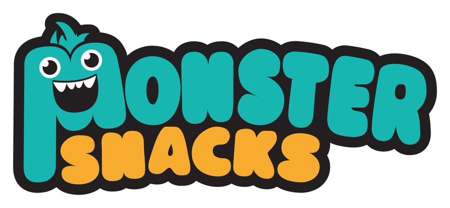
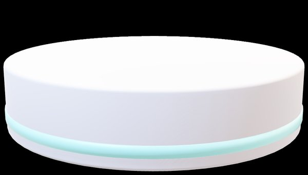
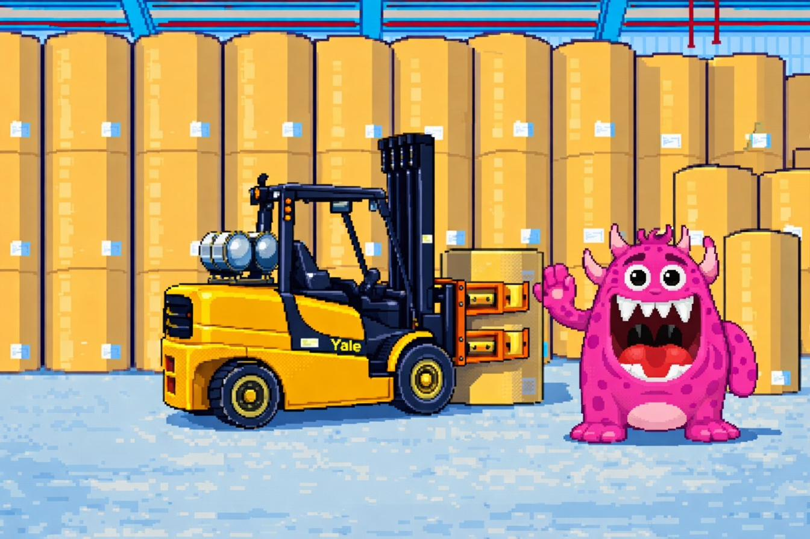
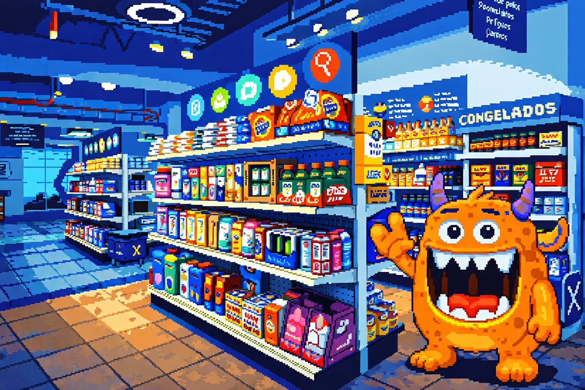
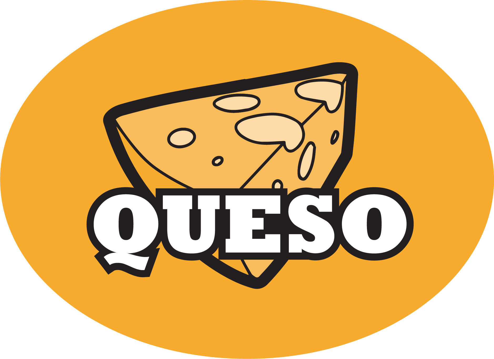
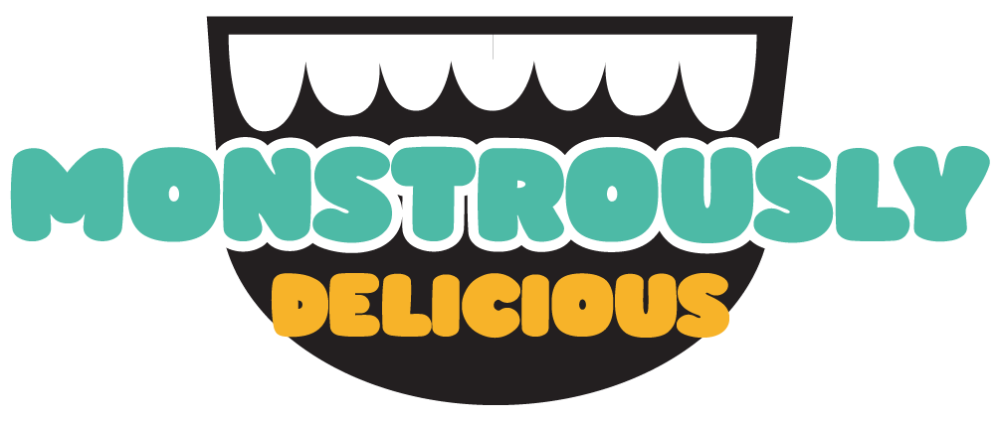

BUILD-A-BOX is designed for landscape. Rotate your phone or tablet sideways for the best experience.
YOU ARE IN CHARGE OF DESIGNING PACKAGING SOLUTIONS
FOR SMURFIT WESTROCK CUSTOMERS.
SELECT THE DESIGN FEATURES THAT BEST FULFILL THE ASSIGNED MISSION
AND CREATE THE IDEAL SOLUTION TO STAND OUT AT THE POINT OF SALE.
Travel through 3 portals to choose the
features of your packaging design.
When you make your choice, the door will light up red — click it to advance.
In BUILD-A-BOX, you are responsible for designing packaging solutions for Smurfit Westrock customers.
Select the design features that best meet the assigned mission and create the ideal solution to stand out at the point of sale.

Monster Snacks is a recognized brand in the market.
Currently have no presence in club stores.




